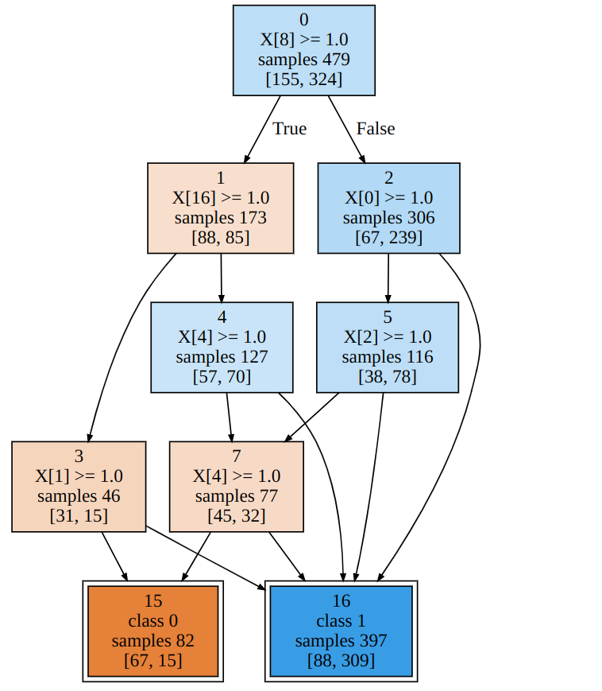

Architecture
Dataset and Topology
The basic setup for building decision diagrams is to first instantiate the Dataset and Topology classes.
They serve as auxiliary structures for both the constructive heuristic algorithm and the MILP optimizer.
The Dataset class is mainly responsible for splitting data into train, validation and test sets, normalizing input, and creating
data structures for feature data (usually denoted as the matrix \(\mathbf{X}\)) and target data (usually denoted as the vector \(\mathbf{y}\)).
It expects as input the path to a dataset file in CSV format. A seed can be given for the randomization of the train/validation/test split.
The Topology class is responsible for storing all fixed structural information about the diagram’s topology, which includes, for instance,
the lists of the diagram’s layers, internal and terminal nodes, and possible arcs departing each internal node. As input, it expects a skeleton,
a list of numbers representing the width (number of nodes) of each layer.
from dataset import Dataset
from topology import Topology
dataset = "path/to/dataset.csv"
skeleton = [1,2,4,4,4]
data = Dataset(dataset, train_validation_test_split=[0.5, 0.25, 0.25], seed=1)
topology = Topology(skeleton, data)
# data structure examples
data.train_X # ndarray of training samples
data.train_Y # training targets
data.classes # list of classes
topology.internal_nodes # list of internal node indexes
topology.nodes_per_layer[2] # list of nodes in the third layer
Heuristic
The next step for building the decision diagram would be to find an initial solution using the constructive heuristic algorithm.
The Heuristic class expects as input the Dataset and Topology instances created earlier. You may also provide
an alpha hyperparameter, for controlling model complexity.
from heuristic import Heuristic
alpha = 0.1
heuristic = Heuristic(data, topology, alpha=alpha)
# training and test accuracy
heuristic.solution.training_accuracy()
heuristic.solution.test_accuracy()
Solution
As can be seen from the last example, the heuristic returns a solution attribute. This attribute is an instance of the Solution
class. It is responsible for storing final or intermediate structural data about a decision diagram, such as split decisions for internal nodes (in
the form of a hyperplane and intercept), used nodes, and the definition of the arcs departing each used internal node. This information defines a built
decision diagram.
Along with structural information, the Solution provides methods for important metrics, such as training, validation and test accuracy, as well as objective value.
Optimizer
The Optimizer class implements the MILP formulation. It expects as input the Data and Topology instances.
It also accepts an alpha hyperparameter and an initial solution. Here, we provide the heuristic solution found earlier:
optimized = Optimizer(data, topology, alpha=alpha, initial_solution=heuristic.solution)
# training and test accuracy
optimized.solution.training_accuracy()
optimized.solution.test_accuracy()
Configuration
Further configuration for the Optimizer can be found in the config module, including the solver’s tolerance parameters, time limit and
verbosity.
Visualizer
Finally, the Visualizer class can be used to graphically represent a decision diagram. It expects the Data and Solution
instances, and returns a Graphviz directd graph
(Digraph).
solution = optimized.solution # or heuristic.solution
viz = Visualizer(data, solution)
viz.view()
An example output for the tic-tac-toe data set:
{kind=link}